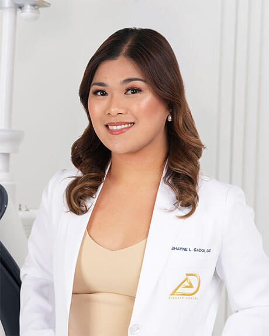

Dr. Kevin Balda
Our specialists
Thirty-one published clinician profiles, across nine disciplines and four Metro Manila clinics. This is the roster, not a selection from it.
You are choosing a clinician here, not a building.
You are at stop 02 of 05
A short pinned set sits above the full list. It is not a ranking and it is not the whole roster.
It is a small, deliberately chosen group, kept current, so that a first time visitor who does not yet know whether their case is prosthodontic or periodontic still lands on a real clinician rather than an empty filter box.
Each pinned card carries the same information as every other card on this page. Nothing in the pinned set is presented that is not also true of the person in the list below.
If none of them matches your case, scroll. The full roster is directly underneath, and searching is faster than reading.

Next, stop 03
Either way, the next stop is the same one: the controls, and the wall they act on. The controls sit directly above the cards rather than in a separate band, so nothing you set is out of sight of what it changes.
You are at stop 03 of 05
Every published profile appears below. The list holds 31 specialists, and the count on this page and the count on the profile set are the same number by design: this page shows the bench, all of it, without a shortlist standing in front of it.
Search by surname, or sort the list from A to Z. The count below updates as you type, so you can see how many clinicians match before you scroll through them. To find out which days a particular specialist works at a particular clinic, call that clinic directly and ask: the four direct lines are at the foot of every page, and the front desk answers them. If you would rather start from a field of dentistry than from a name, the nine discipline hubs are set out at the end of this page. Each card below shows the clinician's photograph and the name their profile is published under, and the list opens in alphabetical order by surname. Every clinician on the published roster appears in it, and the order changes only when you change the sort.
26 of 26 cards shown
No clinician matches that combination. Clear a filter, or choose a field below.
Dr. Kevin Balda
Dr. Bides

Dr. Vicenta Angelou De Leon

Dr. Nuella del Castillo

Dr. Kyle Nathan Delfin

Dr. Claire Dianne Demotica

Dr. Diane Yvone Domondon

Dr. Aina Edquiban

Dr. Eris

Dr. Shayne Gaddi

Dr. Theresa Gaurano
Dr. Jasmin Guevarra

Dr. Derrick Dee Haluag

Dr. Glaisa Mae Lavarias

Dr. Shireyn Locsin

Dr. Raenielle Marquez

Dr. MJ Mendoza
Dr. John Gerard Omo

Dr. Rydni Pastor

Dr. Patricia Polo

Dr. Aaron Rivera
Dr. Sarah Rivera

Dr. Johnnie Rey Sanchez, DMD, MScD

Dr. Joyce Ann Siojo

Dr. Esther Tan, M.S.C.D.

Dr. Trina Tillah
Next, stop 04
You are at stop 04 of 05

What the profile adds
Read it before you book. A specialist page that tells you nothing beyond a name is not doing its job, and neither is a roster you cannot narrow.
Next, stop 05
You are at stop 05 of 05
A search that returns nothing must say so in words. It never renders as a blank panel, and it never leaves you at a dead end with no way out except the back button. The message that appears at stop 03 points here, and these are the three moves it points at.
Open the hub for the field.
Each hub explains the field, lists the treatments inside it, and shows what those treatments start at. It is the right first move when you know roughly what is wrong but not what it is called.
Go straight to the treatment.
If you already know the treatment, go straight to it. Every treatment page names the field it belongs to and routes back here to the right clinicians.
If you would rather not decide.
Book the consultation and let the group route it. Complex work is not meant to be sorted by the patient, and a case that turns out to span two fields is handled by two of our own specialists rather than sent out to a third party.
The nine field hubs
End of the route
You do not have to pick the right specialist yourself.
If you know whose name you want, ask for that clinician when you book. If you do not, book the consultation and the case is routed internally to the field it belongs to. Either way a specialist looks at the actual case, and you leave with a written quote before anything is scheduled.
The route ends here, and the ask below is the same one whichever stop you came from: tell us what you want looked at and we will place you with the specialist whose field the case belongs to.